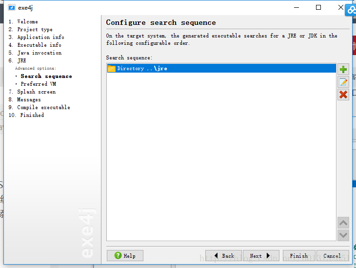

原文连接:https://www.cnblogs.com/zhangxinhua/p/11470935.html
本文重点介绍如何将我们写的java代码打包成在电脑上可以运行的exe文件
本文重点介绍如何将我们写的java代码打包成在电脑上可以运行的exe文件。这里只介绍直接打包成exe的方法，至于打包成exe安装包下节介绍
软件准备
- 今天我们下载好上面的内容之后只需要用到其中的一个软件，对，就是里面的exe4.exe文件
- 然后就是安装这个软件，软件都是傻瓜式安装。不多说！安装后首页显示，激活码去网上搜索！
jar包准备
- 在打包之前我们当然得先准备jar包啦。选择项目右击-->Export-->Runnable JAR file
- 点击下一步 别忘记选择主入口，这些在之前的文章都已经说过了。
打包开始
在打包开始我们得想之前我用jsmooth打包exe文件一样，需要准备jre文件，我这里就用了jdk文件，jre好像不行
下面就开始打包的真正的开始了，首先我们打开之前安装好的exe4j这个软件。直接点击第二步：peoject type 选择 JAR in EXE mode
- 点击next我们会看到需要我们填写工程的简名和程序的输出地址，工程简名可以随便填写，输出地址 就是你想把你的exe文件最后输出在哪里，建议放在你好找的地方，毕竟以后你只用点击exe就能运行了。
- 然是继续点击next，下一个界面我们遇到选择模式的Executable type，这里就取决与我们java的代码了，如果你开发的是黑窗体程序就选择console application； 如果开发的是java swing 程序那就选择默认的GUI application ，第三个选项我也不知道是java 什么程序。读者可以自己研究。我这里就选择默认的GUI程序了。
- 第二个选项是Executable name 顾名思义就是你程序的名字，你可以起一个响亮的名字，这里支持中文名字的。
- 第三个选项是Icon File 这就是我们exe层序的图标，就像QQ软件那个企鹅一样，建议可以设置成自己的个性照片，但是这个只能用ico格式的图片。当然也可以不选择，就用系统默认的图标
这里设置好之后我们点击界面的左侧菜单Executable info 下面的Advanced options，因为这里我们需要设置一些详细信息，这里不点很难成功的打包的。
Redirection参数
- service options
这里的参数我们自己看看懂了，大家可以设置也可以不设置。
version info 这里也不重要，看看我的参考吧
32 -bit or 64 - bit
这个就是取决于你的i项目在那里运行了，如果你想让他在64系统下能
运行你就选择Generate 64-bit executable 打上√，否则不勾。
Mainfest options 这里不选择，让他默认就行了
然后就是添加jar包了。(java invocaton)
在class path中点击加号选择我们之前打好的jar包
选择好 jar包我们就选择下面的Main classs中选择我们需要程序运行的主入口，这个对于开发来说应该都懂得。
- jre部分设置好最低最高版本之后点击Advanced Options-->Search sequence ,默认是会选择我们电脑上系统环境中的jdk,但是我们系统环境的jdk不能被别人用到所以我们这里把默认的三个全部散掉，然后添加我们事先准备好的jdk

next之后出现Preferred VM 中选择Client hostpost VM
next之后，我们到了Splash screen,就是你的程序启动界面，如果你想做的酷炫点就可以选择一下，这里图片没有限制应该，我选的就是普通的图片，你也可以试试GIF 动态图。
- 到这里你就可以一直下一步。一直到下面这个界面你就可以选择Finishing 或者启动程序了。
效果图
启动图
- 运行后界面
图标变了
其他你可以右键这个exe看看属性就是我们上面设置的一些可有可无的东西楽。
# 加入战队
微信公众号